Codex 已连接
分析本地 Agent 中枢架构AgentXRay · …/aicode_library/AgentXRay
Enter 换行 · ⌘ / Ctrl + Enter 润色
输出规则精简 · 结论 / 变更 / 验证 / 限制 / 下一步
补充任务信息AgentXRay · 可选
把 AgentXRay 导出的任务资料粘贴到这里，供本轮分析参考。
润色结果会出现在这里

把草稿变成可发送的提示词
输入左侧草稿，Sidecar 会结合当前会话上下文进行理解和润色。
当前进展
已梳理会话读取和消息投递链路；还需确认模块边界与异常处理。
建议下一步
先核对现有入口与调用链，再明确模块边界，避免基于错误假设返工。
需要你决定的事项
现有记录尚未确定采用独立调度器，还是沿用现有入口。请先确认方向。